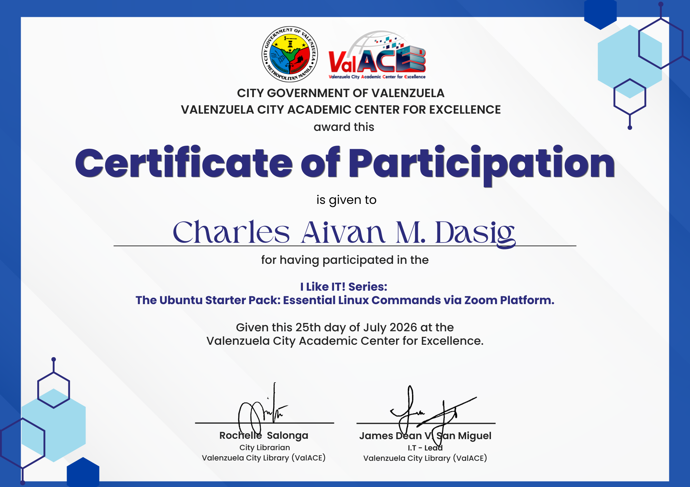
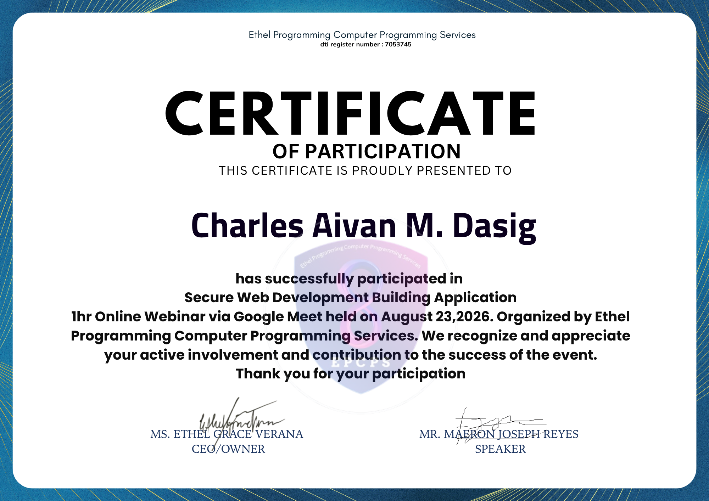
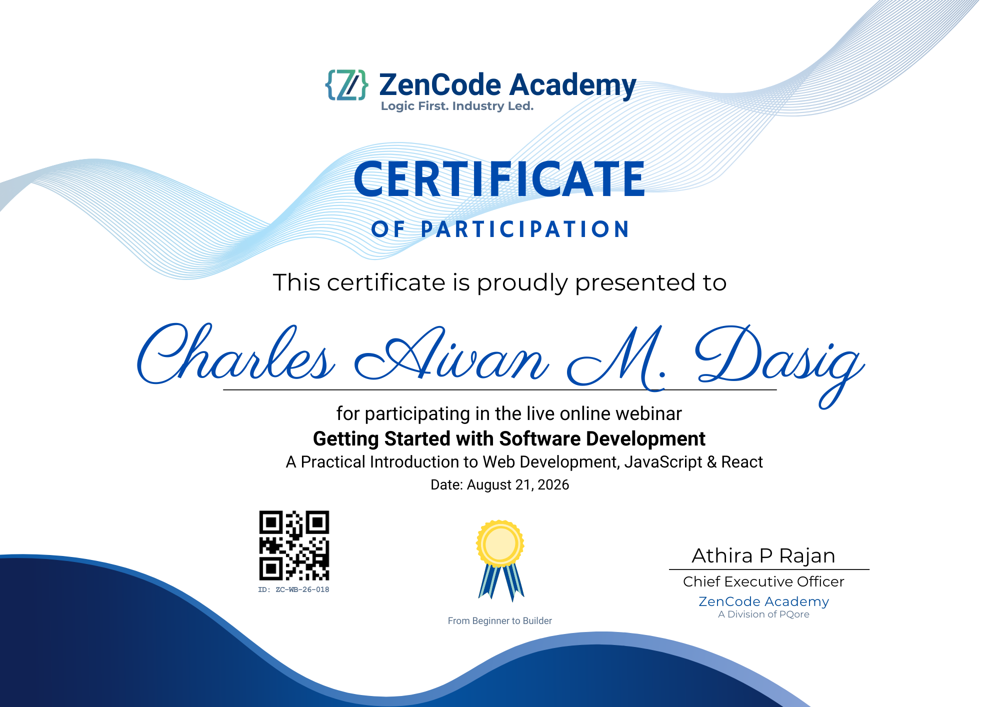
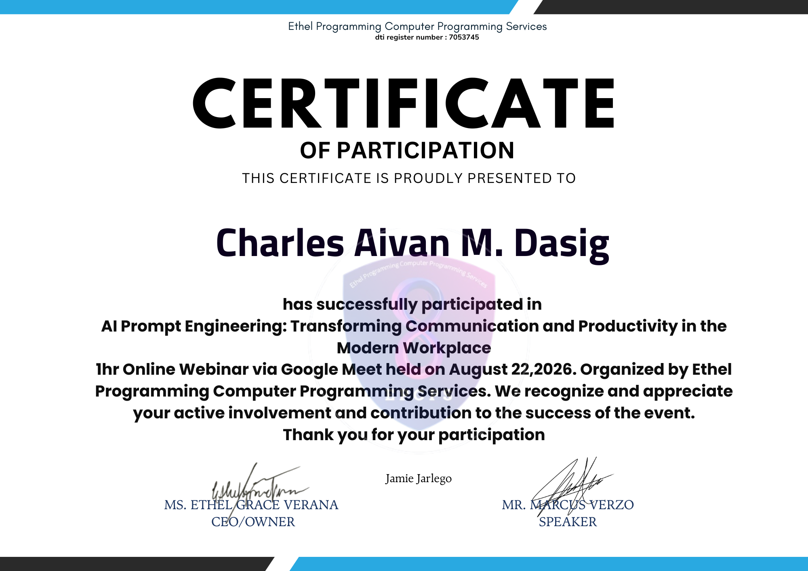
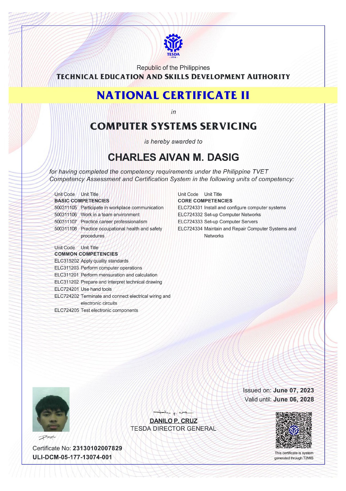
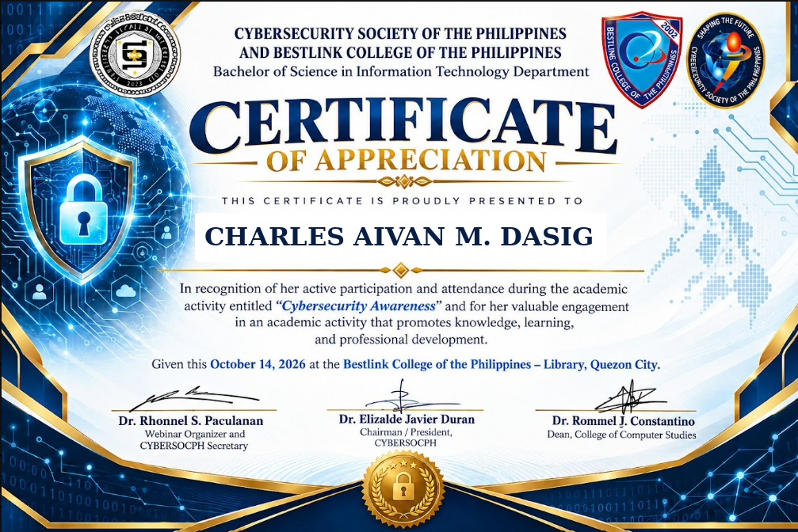

ValACE · July 25, 2026
Like IT! Series: The Ubuntu Starter Pack
Certificate of participation for Essential Linux Commands via Zoom Platform.
View CertificateLearning & professional growth
A record of courses, training, and credentials that support my continued growth in web development, programming, and information technology.

ValACE · July 25, 2026
Certificate of participation for Essential Linux Commands via Zoom Platform.
View Certificate
Ethel Programming Computer Programming Services · August 23, 2026
Certificate of participation in a one-hour online webinar via Google Meet.
View Certificate
ZenCode Academy · August 21, 2026
A practical introduction to web development, JavaScript, and React.
View Certificate
Ethel Programming Computer Programming Services · August 22, 2026
Transforming Communication and Productivity in the Modern Workplace; one-hour online webinar.
View Certificate
TESDA · Issued June 7, 2023 · Valid until June 6, 2028
TESDA National Certificate II in Computer Systems Servicing, awarded after completing the competency requirements under the Philippine TVET Competency Assessment and Certification System.
View Certificate
Cybersecurity Society of the Philippines · October 14, 2026
Certificate of Appreciation recognizing participation in an academic activity on cybersecurity awareness at Bestlink College of the Philippines.
View CertificateEasy to maintain
When you add a credential, include these details so clients and employers can understand what you completed.
Use the exact name shown on the certificate.
Name the school, platform, or organization that issued it.
Add the month and year it was issued, if available.
Link to the certificate PDF, image, or official verification page.
Privacy tip: Before publishing a certificate, check whether it contains personal information you do not want to share publicly. Never invent a credential ID or verification link.
Alongside my projects, I continue to build my skills through practice, coursework, and relevant training.
Explore my projects